Components
These are usage guidelines for common components used across Nextcloud. For a full list of components go to the Nextcloud Vue component library.
List item
List items (NcListItem) are the rows of a content list such as conversations in Talk, messages in Mail, and boards in Deck.
List items are flexible, always having a leading avatar or icon, a name, and an action menu on the right, and optionally a preview line, a timestamp or a counter bubble.
Single-line list items show only the name and suit dense, navigation-like lists. Use them when the name alone is enough to identify the row.
Two-line list items show a name or title on the first line and a preview or metadata on the second line. Use them for messages, conversations, and notes where extra information helps the user.
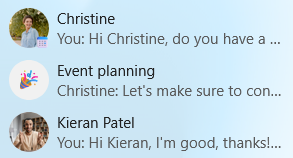
Counter bubbles
Counter bubbles (NcCounterBubble) are small badges that show a number count next to an item, often in the navigation. A counter bubble is not interactive.
Filled primary bubbles can be used to highlight counters that may need attention like direct mentions.
Outlined bubbles can be used for less important counters.
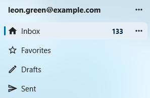
Avatars
Avatars (NcAvatar) represent a user, group, or contact. They show the user’s profile picture when available, the user’s initials otherwise, and a generic icon for non-users like external email addresses or integrations. An avatar should almost always sit next to a display name.
User avatars are the default and automatically show the user’s profile picture and status. Use them whenever you have a real Nextcloud user.
Non-user avatars represent external email addresses, guests, and integrations. For example, external recipients in Mail and guests in Talk.
32px as the default size for avatars, but they can be as small as 24px in dense lists, and as large as 44-64px in headers and profile cards. Keep the size consistent within a single list or row.
Avoid placing an avatar alone in flowing text without a name next to it. For inline mentions of a user inside a sentence, use a User bubble.
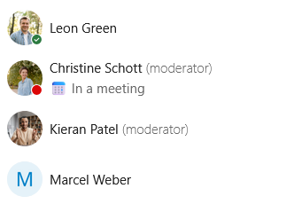
Chips
Chips (NcChip) are small, compact labels for short pieces of metadata like tags, categories, selected values inside an input, or filter options above a list. Do not use chips for triggering major actions, use a button instead.
Removable chips have a small close button and represent a value that can be removed. Use them inside multi-value inputs like recipient pickers, tag editors, and label fields.
Filter chips toggle a filter on or off and visually indicate when they are active. Use them for small filter sets above a list, like “Unread” or “Flagged” in Mail.
Colored chips work well for user-defined labels like tags and calendar categories.
When there are many options or a lack of space, consider using a dropdown instead.
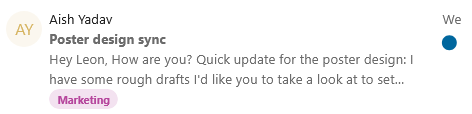
User bubbles
User bubbles (NcUserBubble) represent a user inside flowing content like chat messages, comments, and text documents.
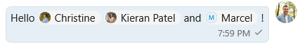
Note card
Note cards (NcNoteCard) are persistent inline message boxes that can be used to provide additional information about an element, communicate state, warn the user, or surface a problem. They come in four types: info, success, warning, and error.
Info note cards explain context or share a tip. Use them for helpful additional information like “Your date of birth is needed for age verification”.
Success note cards can show persistent positive information like “Your software is up-to-date”.
Warning note cards can be used to indicate an unfavorable but non-blocking state or guide users through a risky operation. For example, Talk shows a “High-performance backend is not installed” warning to indicate it may result in connectivity issues for participants in a call.
Error note cards mark a real problem in the current view, like “Could not connect to mail server”.
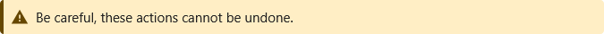
Dropdown
Dropdowns (NcSelect) let the user pick one or more values from a list. They support search, free-text entry, and loading options on the fly.
Single-select dropdowns let the user pick one value.
If your dropdown has many options, do add an option to search. For example, it is possible to search for a time zone.
Do not use them for a small number of mutually exclusive options. A radio group is clearer in that case.
Multi-select dropdowns allow several values and show each selection as a chip inside the input. Use them for things like selecting multiple users and tags.
Do let the user type and add their own option whenever applicable, for example while adding recipient email addresses to an email.
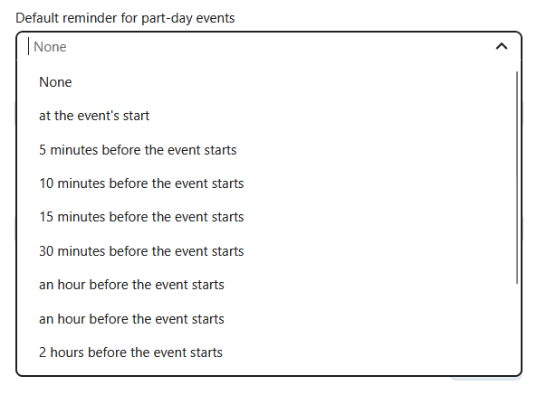
Input fields
Input fields allow the user to enter text, numbers, passwords, and more. Input fields often have labels, helper text, and errors.
Use text inputs (NcTextField) for single-line text like names, titles, subjects, search queries, and URLs.
Use the password input (NcPasswordField) for passwords which obscures the text being typed and has a reveal-password button.
A text area (NcTextArea) is for multi-line input like descriptions, notes, plain-text email bodies, and card details.
Every input field should have a label. The default is a floating label which appears floating at the border when the input is active or filled. Use external labels when there are many inputs in a column.
When something is wrong with the text the user has entered, for example an invalid email address format, show an error state together with a short helper message that tells the user how to fix it.
Do use a leading icon when it helps identify the field (a magnifying glass for search, or an envelope for email), and a trailing button for inline actions like clearing, copying, or revealing a password.
Do choose the right text type (email, URL, search) so mobile keyboards adapt and the browser can help.
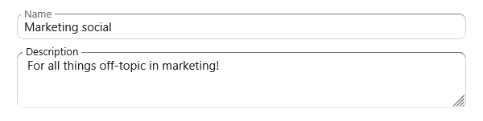
Formattable text area
Use the rich text content (NcRichContenteditable) when the user may want to enter text with formatting via
markdown syntax. This can be used for messages, comments, and long descriptions. To display the results of the text entered in this text area, use the NcRichText component which renders the
formatted text.
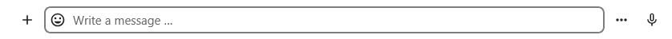
Pickers
Pickers are specialized inputs that open a popover or modal to choose a structured value like a date, a timezone, a color, an emoji, or a file.
Datetime picker
The datetime picker can be used to enter a date and time for scheduling events, setting reminders, and selecting dates of birth.
Use the native picker (NcDateTimePickerNative) as a default. It uses the browser’s native date and time controls and is more accessible than a custom one.
Use the custom picker (NcDateTimePicker) when the user benefits from seeing a calendar persistently, like for selecting a slot while booking an appointment.
Do use a sensible default date and time, for example, a user setting their work hours may benefit from a default of 9:00 AM as their starting availability and 5:00 PM as ending availability.
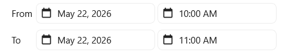
Timezone picker
The timezone picker (NcTimezonePicker) is a specialized dropdown preloaded with all named timezones.
Do use it only when a timezone is needed. Often the user’s default home timezone may be sufficient for the action.
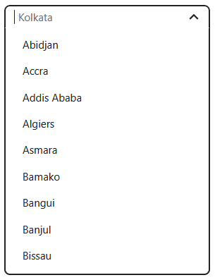
Color picker
The color picker (NcColorPicker) opens a small popover with a preset color palette. It can be used for setting colors for various items like Deck boards, calendars, and tags. The color picker should color a specific item, not large areas of the UI.
Use the default Nextcloud palette so colors stay consistent across different Nextcloud apps.
Enable the advanced fields (hex, RGB) only when fine control matters, for example, for personal theming.
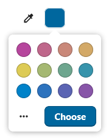
Emoji picker
The emoji picker (NcEmojiPicker) opens a popover for choosing an emoji, with search, skin-tone selection, and a recently-used row.
Do use it for user-generated content like reactions in Talk, conversation icons, and user-created pages in Collectives.
Do not use it as a generic icon picker for navigation entries or system items. Those use Material Symbols.
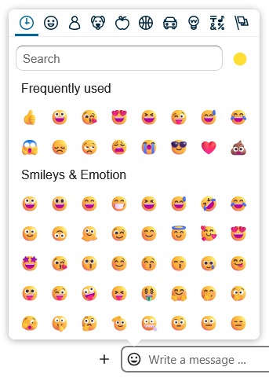
File picker
The file picker (NcFilePicker) opens a modal of the user’s files on Nextcloud. It supports filtering by file type, picking one or several items, and choosing folders.
Use the file picker when the user can attach a file from their Nextcloud. Also let the user upload a file from their local filesystem.
The file picker can also be useful for moving or copying files.
Do filter by file type when only certain formats are valid.
Do label the primary button with a verb that matches the action like “Attach”, “Insert”, or “Choose”.
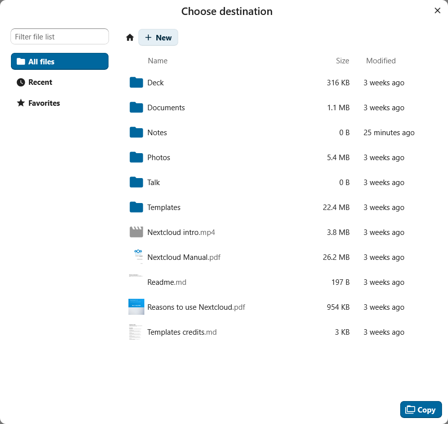
Checkboxes and toggles
Checkboxes and toggles (NcCheckboxRadioSwitch) are selection controls that share a single component.
Checkboxes allow users to select multiple options from a list. For example, per-folder share permissions.
Toggles (switches) are used for enabling and disabling a single setting.
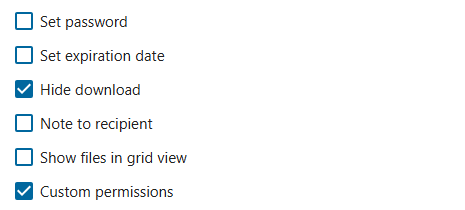
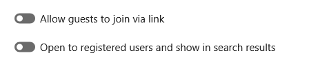
Radio groups
Radio buttons allow users to select exactly one option from a defined radio group (NcRadioGroup). It also has a button variant which displays the options as buttons. When there are many options, use a dropdown instead.
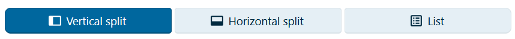
Empty content
Empty content (NcEmptyContent) is a message used when a view has no items to show. It has an icon, a heading, a short description, and an optional button.
Do use helpful wording. “Drop files here to upload” is better than “No items”.
Do show a button with a helpful next step whenever possible like “Create event” and “Add a card”.
Do not use an empty content element while content is still loading. Use a skeleton screen while loading and the empty state only once the load finishes with nothing.
Do not use empty content for error states. If the loading failed, show a recoverable error message with a retry option.
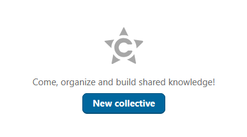
Modals
Modals are overlays that demand the user’s focused attention. In the component library there are two components: a dialog (NcDialog) used for confirmations and short forms, and a modal (NcModal) for custom content like viewers and slideshows. These components are used when there is a specific task or information that the user needs to focus on.
The dialog component is commonly used for confirming a permanent action. Do use descriptive buttons for proceeding like “Save”, “Move file”, “Delete file”.
Do not use generic words in the buttons like “OK”, especially when the action is destructive.
Choose an appropriately sized dialog for your flow. if the dialog contains only small input fields, use a small dialog.
Avoid opening a modal over another modal.
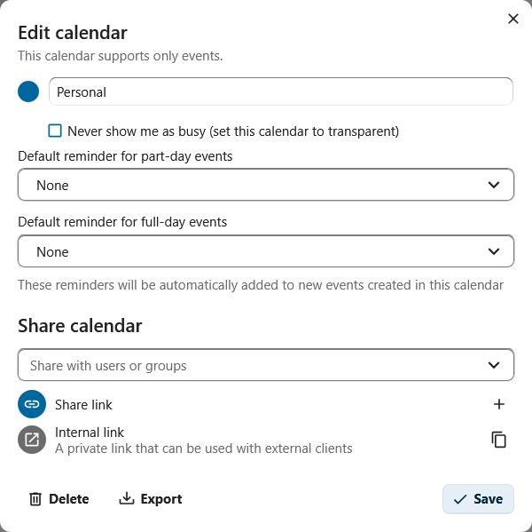
Settings
The settings dialog (NcAppSettingsDialog) holds an app’s per-user preferences and opens from the cog at the bottom of the app navigation.
Inside the dialog, settings are organized into sections (NcAppSettingsSection) on the left. Each section should cover one topic. If there are more than around ten sections, consider reorganizing them and removing some settings.
Under each section are form boxes (NcFormBox) containing the actual settings, so that settings look and feel the same across every Nextcloud app.
Settings can be grouped into a form group (NcFormGroup) with an appropriate label.
If the app has no per-user preferences to offer, the settings dialog can be omitted entirely.
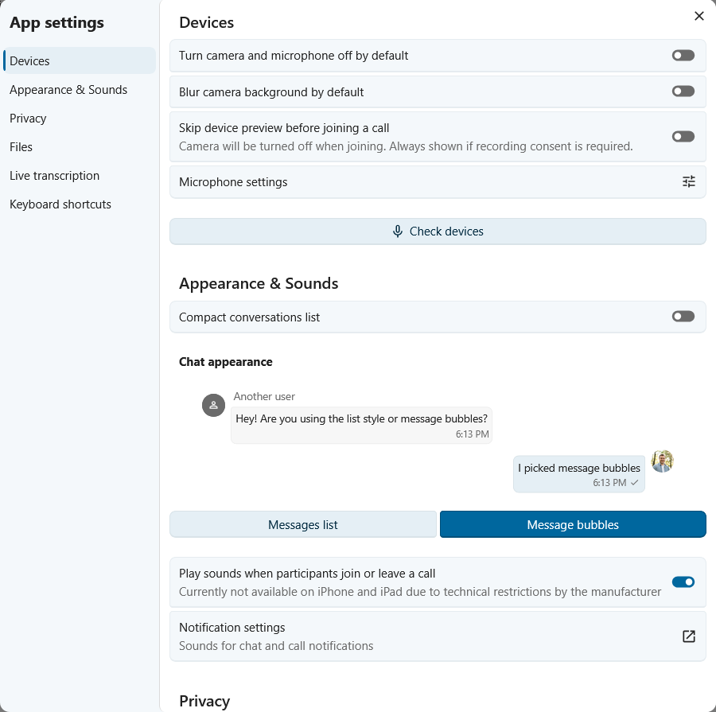